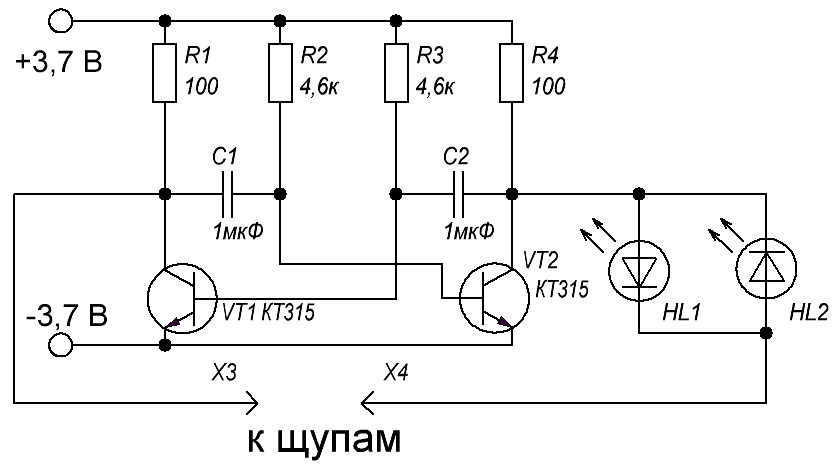

Простой тестер для проверки радиоэлементов
Тестер предназначен для проверки радиодеталей, таких как диоды, транзисторы, конденсаторы, светодиоды, лампы накаливания, катушки индуктивности и многое другое.

Рис. 1 - Схема тестера
В тестере содержится минимальное количество элементов, которые обязательно найдутся в хозяйстве даже у начинающих радиолюбителей. Вся схема это по сути один мультивибратор, собранный на транзисторах. Он генерирует прямоугольные импульсы. Контролируемая цепь подключается к плечам мультивибратора последовательно с двумя светодиодами, встречно параллельно. В результате проверяемая цепь тестируется переменным током.
Принцип работы тестера для проверки радиокомпонентов
С рабочего мультивибратора снимается переменный ток, примерно равный по амплитуде источнику питания. Изначально светодиоды не горят, так как цепь разомкнута. Но если замкнуть щупы, то переменный ток побежит через светодиоды. В это время через светодиоды будет бежать переменный ток частотой примерно 300 Гц. В результате встречно-параллельного включения светодиоды будут вспыхивать попеременно, но из-за высокой частоты генерации этого не будет видно человеческому глазу, а будет видно, что просто одновременно светятся оба светодиода.
К примеру, если подключить к щупам диод, то будет светиться только один светодиод, так как переменный ток побежит только через один период. В результате сразу будет понятно, что подключенный диод исправен. Тоже самое наблюдается при проверке переходов транзистора.
Главное удобство этого тестера в том, что видно сразу работает переход диода или нет. Не нужно переворачивать элементы, под полярность тестера, как в обычном мыльтиметре. Это дает огромное преимущество при проверке большого количества радиоэлементов, да и вообще очень удобно.
Также можно проверять на пробой или обрыв другие элементы или цепи.
| Радиоэлемент | Исправен | Пробой | Обрыв |
|---|---|---|---|
| Биполярный транзистор | Переход КБ и ЭБ - светится один светодиод; переход КЭ - ничего не светится |
При подключении пробитого перехода светятся оба светодиода | Ничего не светится |
| Диод, свтодиод | Светится один светодиод | Светятся оба светодиода | Ничего не светится |
| Индуктивные элементы (катушки, реле), лампы накаливания, предохранители | Светятся оба светодиода | - | Ничего не светится |
| Конденсаторы емкостью более 1 мкФ | Если емкость более 1 мкФ, то один светодиод загорается и через время гаснет. Если емкость менее 1 мкФ, то тестер не подходит для проверки |
Светятся оба светодиода | Ничего не светится |
Собрать тестер можно на плате или навесным монтажом. Светодиоды лучше брать разного цвета, чтобы было видно четко визуально видно работу.
Также с помощью этого нехитрого прибора можно определить где катод и анод у неизвестного диода. Но для этого необходимо нанести маркировку расположения на светодиоды тестера.
В качестве питания используется литий-ионный аккумулятор напряжением 3,7 В или 2-3 «мизинчиковые» батарейки на 1,5 В включенные последовательно.
Источники:
sdelaysam-svoimirukami.ru - Простой тестер для проверки радиоэлементов